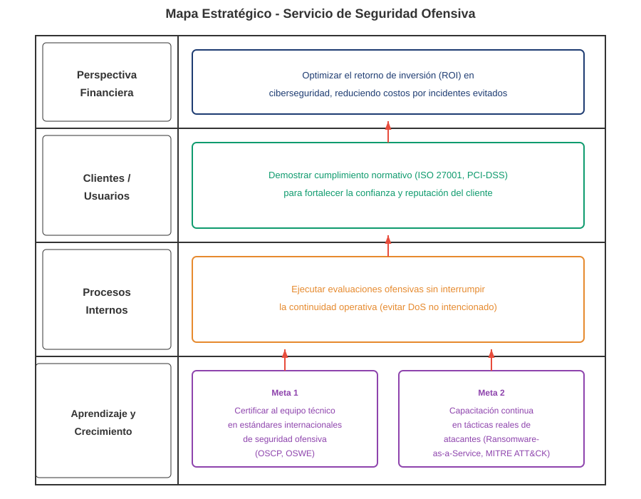
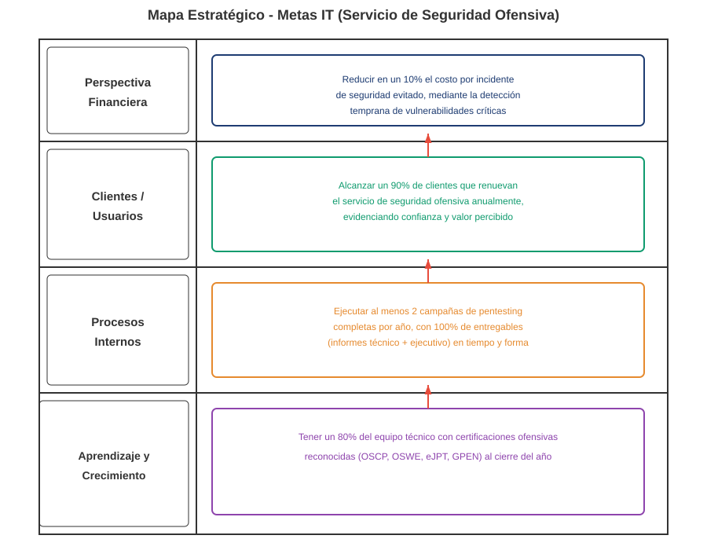

Mapa Estratégico
Descripción de la Actividad
Los mapas estratégicos muestran la relación causa-efecto entre las metas de las cuatro perspectivas del Balanced Scorecard (Financiera, Clientes, Procesos Internos, Aprendizaje y Crecimiento). A continuación se presentan el mapa para las Metas Corporativas y el mapa para las Metas IT del Servicio de Seguridad Ofensiva.
Mapa Estratégico - Metas Corporativas

Mapa Estratégico - Metas IT

Nota: Las flechas rojas indican la dirección de la relación causa-efecto. Las metas en niveles inferiores (Aprendizaje) habilitan los niveles superiores (Procesos → Clientes → Financiera).